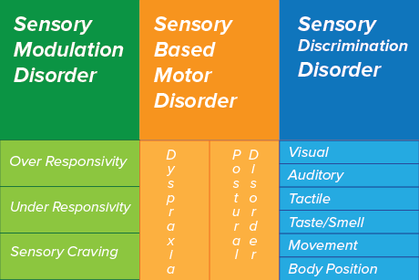

Sensory Processing Disorder (SPD) occurs when there is a discrepency with the brain's ability to process sensory information both internally and/or from the environment and then respond correctly to the environment.
|  |
Descriptive text of sensory modulation disorder goes here
| Over Responsive | Under Responsive | Sensory Craving | |
|---|---|---|---|
| text for over responsive | text for under responsive | text for sensory craving | |
| image for over | image of under | image for sensory craving |
Text to descrive sensory based movement disorders goes here